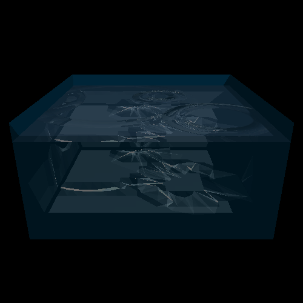
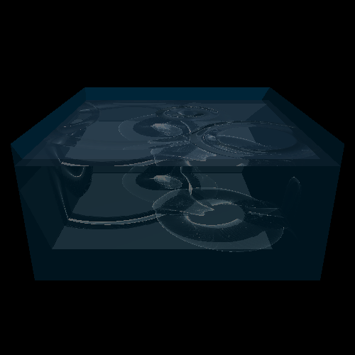
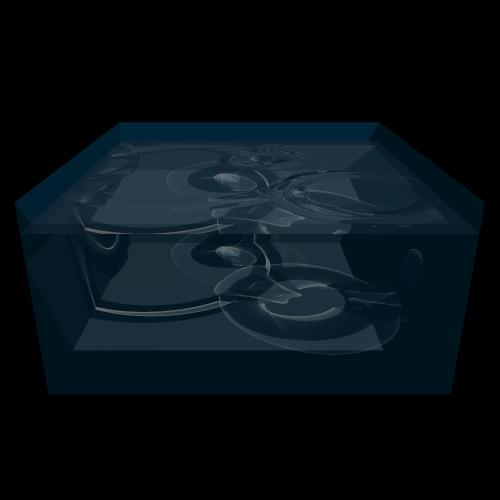

Caustics - Part 2
Now that we can render the caustic triangles in a reasonable ammount of time, we can continue on with higher resolution
water meshes.
The following images are the same scene as before, with progressively more/finer caustic triangles. The last one has
a 1000x1000 mesh, totalling 2 million caustic triangles. (Again, these are not anti-aliased.)


Finally, we enable anti-aliasing:

While caustics are only generated via a water mesh, the rays are refracted generally. So, we can put refracting objects
under the surface and generate other kinds of caustics. In the following scene, a sphere with an index of refraction
higher than the water is rendered, generating a pleasant caustic effect: